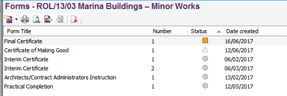

Opening an Active Job |
Ensure the user is currently in the Jobs view by selecting View > Jobs. In the Job list, either:
All of the forms included in the selected job will now be displayed in the form list as shown in the example below:

From this area it is possible to carry out numerous tasks related to the forms within the active job. The user can;
See also:
Demo Jobs
Archiving Jobs
Setting up a new Job
Adding Forms to a Job
Editing Forms
Previewing and Printing a Draft Form
Issuing Forms
Recalling Forms